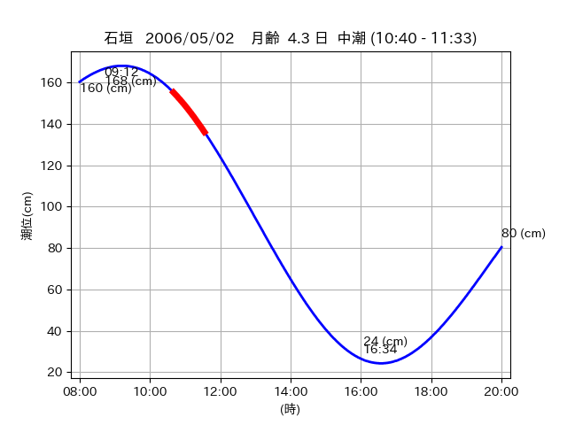

<!DOCTYPE html>
<html>
<head>
    
    <meta http-equiv="content-type" content="text/html; charset=UTF-8" />
    
        <script>
            L_NO_TOUCH = false;
            L_DISABLE_3D = false;
        </script>
    
    <style>html, body {width: 100%;height: 100%;margin: 0;padding: 0;}</style>
    <style>#map {position:absolute;top:0;bottom:0;right:0;left:0;}</style>
    <script src="https://cdn.jsdelivr.net/npm/leaflet@1.9.3/dist/leaflet.js"></script>
    <script src="https://code.jquery.com/jquery-3.7.1.min.js"></script>
    <script src="https://cdn.jsdelivr.net/npm/bootstrap@5.2.2/dist/js/bootstrap.bundle.min.js"></script>
    <script src="https://cdnjs.cloudflare.com/ajax/libs/Leaflet.awesome-markers/2.0.2/leaflet.awesome-markers.js"></script>
    <link rel="stylesheet" href="https://cdn.jsdelivr.net/npm/leaflet@1.9.3/dist/leaflet.css"/>
    <link rel="stylesheet" href="https://cdn.jsdelivr.net/npm/bootstrap@5.2.2/dist/css/bootstrap.min.css"/>
    <link rel="stylesheet" href="https://netdna.bootstrapcdn.com/bootstrap/3.0.0/css/bootstrap-glyphicons.css"/>
    <link rel="stylesheet" href="https://cdn.jsdelivr.net/npm/@fortawesome/fontawesome-free@6.2.0/css/all.min.css"/>
    <link rel="stylesheet" href="https://cdnjs.cloudflare.com/ajax/libs/Leaflet.awesome-markers/2.0.2/leaflet.awesome-markers.css"/>
    <link rel="stylesheet" href="https://cdn.jsdelivr.net/gh/python-visualization/folium/folium/templates/leaflet.awesome.rotate.min.css"/>
    
            <meta name="viewport" content="width=device-width,
                initial-scale=1.0, maximum-scale=1.0, user-scalable=no" />
            <style>
                #map_7840f92e2df4a98b36c6ea374a07c5c2 {
                    position: relative;
                    width: 2048.0px;
                    height: 1600.0px;
                    left: 0.0%;
                    top: 0.0%;
                }
                .leaflet-container { font-size: 1rem; }
            </style>
        
</head>
<body>
    
    
            <div class="folium-map" id="map_7840f92e2df4a98b36c6ea374a07c5c2" ></div>
        
</body>
<script>
    
    
            var map_7840f92e2df4a98b36c6ea374a07c5c2 = L.map(
                "map_7840f92e2df4a98b36c6ea374a07c5c2",
                {
                    center: [24.54, 124.317],
                    crs: L.CRS.EPSG3857,
                    ...{
  "zoom": 12,
  "zoomControl": true,
  "preferCanvas": false,
}

                }
            );

            

        
    
            var tile_layer_c67c1df6b3bff2624884d21858242a96 = L.tileLayer(
                "https://cyberjapandata.gsi.go.jp/xyz/seamlessphoto/{z}/{x}/{y}.jpg",
                {
  "minZoom": 0,
  "maxZoom": 18,
  "maxNativeZoom": 18,
  "noWrap": false,
  "attribution": "\u5730\u7406\u9662\u5730\u56f3",
  "subdomains": "abc",
  "detectRetina": false,
  "tms": false,
  "opacity": 1,
}

            );
        
    
            tile_layer_c67c1df6b3bff2624884d21858242a96.addTo(map_7840f92e2df4a98b36c6ea374a07c5c2);
        
    
            var marker_64150cf33c405656b6476d5f1ac603ab = L.marker(
                [24.5633, 124.3323],
                {
}
            ).addTo(map_7840f92e2df4a98b36c6ea374a07c5c2);
        
    
            var icon_6f970a8792af9b07f2fd810469394d6b = L.AwesomeMarkers.icon(
                {
  "markerColor": "orange",
  "iconColor": "white",
  "icon": "info-sign",
  "prefix": "glyphicon",
  "extraClasses": "fa-rotate-0",
}
            );
        
    
        var popup_34f16c1d52aef9d8a3f92cadc6fee64c = L.popup({
  "maxWidth": "100%",
});

        
            
                var html_995eb4548db6ed6aad27738aa7106a66 = $(`<div id="html_995eb4548db6ed6aad27738aa7106a66" style="width: 100.0%; height: 100.0%;"><table><tr><td></td></tr><tr><td><center>20060502 No.1 </center></table></td></tr></table</div>`)[0];
                popup_34f16c1d52aef9d8a3f92cadc6fee64c.setContent(html_995eb4548db6ed6aad27738aa7106a66);
            
        

        marker_64150cf33c405656b6476d5f1ac603ab.bindPopup(popup_34f16c1d52aef9d8a3f92cadc6fee64c)
        ;

        
    
    
                marker_64150cf33c405656b6476d5f1ac603ab.setIcon(icon_6f970a8792af9b07f2fd810469394d6b);
            
    
            var poly_line_246a5e0d27cfe9d1885bc41dd50cd5ff = L.polyline(
                [[24.5633, 124.3323], [24.5617, 124.3333]],
                {"bubblingMouseEvents": true, "color": "#00FFFF", "dashArray": null, "dashOffset": null, "fill": false, "fillColor": "#00FFFF", "fillOpacity": 0.2, "fillRule": "evenodd", "lineCap": "round", "lineJoin": "round", "noClip": false, "opacity": 1.0, "smoothFactor": 1.0, "stroke": true, "weight": 3}
            ).addTo(map_7840f92e2df4a98b36c6ea374a07c5c2);
        
    
            var marker_927cb14516a7561f57d69c1000fec013 = L.marker(
                [24.5365, 124.315],
                {
}
            ).addTo(map_7840f92e2df4a98b36c6ea374a07c5c2);
        
    
            var icon_4fd5cf72b2c0c8a0dccb0105287c44bd = L.AwesomeMarkers.icon(
                {
  "markerColor": "orange",
  "iconColor": "white",
  "icon": "info-sign",
  "prefix": "glyphicon",
  "extraClasses": "fa-rotate-0",
}
            );
        
    
        var popup_7e05d7ded5ffbde1f4b46a89c9abe6aa = L.popup({
  "maxWidth": "100%",
});

        
            
                var html_8c00da442f829f25eaf2e5393a4f5137 = $(`<div id="html_8c00da442f829f25eaf2e5393a4f5137" style="width: 100.0%; height: 100.0%;"><table><tr><td></td></tr><tr><td><center>20060502 No.3 </center></table></td></tr></table</div>`)[0];
                popup_7e05d7ded5ffbde1f4b46a89c9abe6aa.setContent(html_8c00da442f829f25eaf2e5393a4f5137);
            
        

        marker_927cb14516a7561f57d69c1000fec013.bindPopup(popup_7e05d7ded5ffbde1f4b46a89c9abe6aa)
        ;

        
    
    
                marker_927cb14516a7561f57d69c1000fec013.setIcon(icon_4fd5cf72b2c0c8a0dccb0105287c44bd);
            
    
            var poly_line_d7bbaef92cc3a7136e59fa866005197c = L.polyline(
                [[24.5365, 124.315], [24.5438, 124.3182]],
                {"bubblingMouseEvents": true, "color": "#FF00FF", "dashArray": null, "dashOffset": null, "fill": false, "fillColor": "#FF00FF", "fillOpacity": 0.2, "fillRule": "evenodd", "lineCap": "round", "lineJoin": "round", "noClip": false, "opacity": 1.0, "smoothFactor": 1.0, "stroke": true, "weight": 3}
            ).addTo(map_7840f92e2df4a98b36c6ea374a07c5c2);
        
</script>
</html>